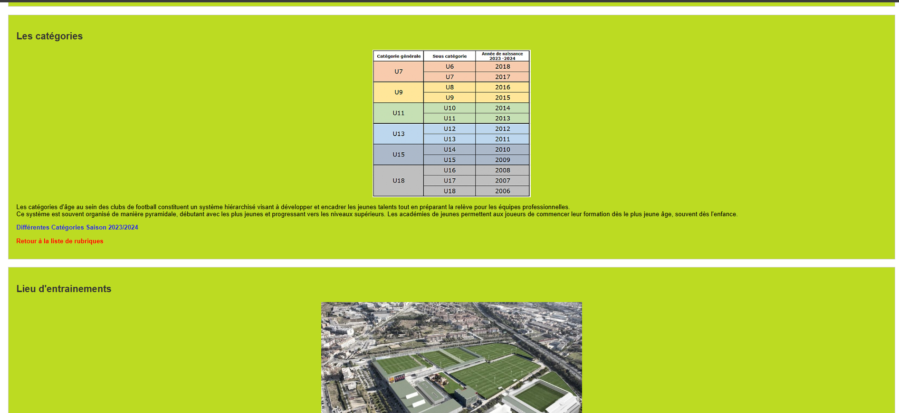
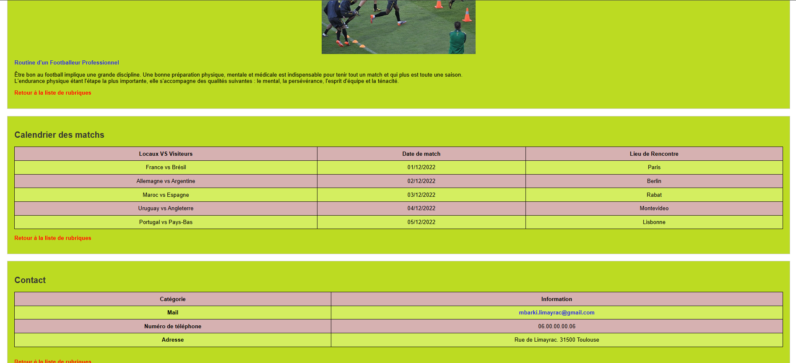
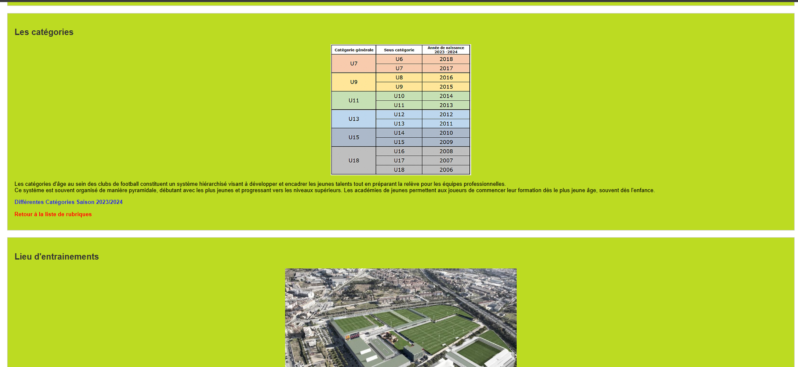
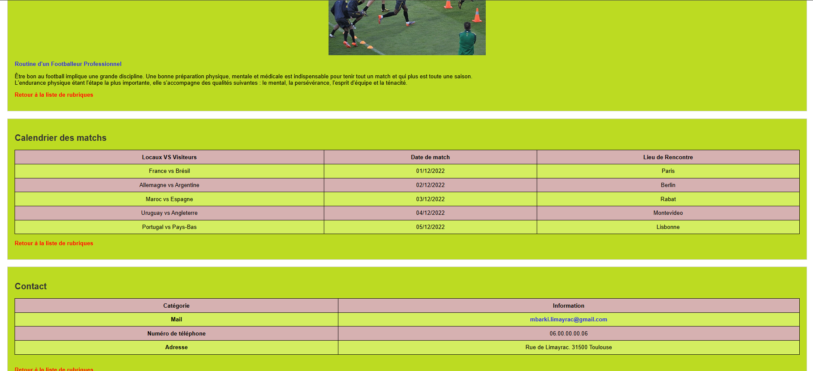
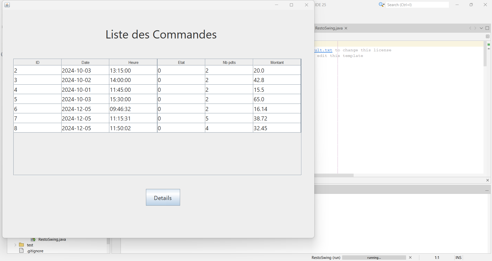
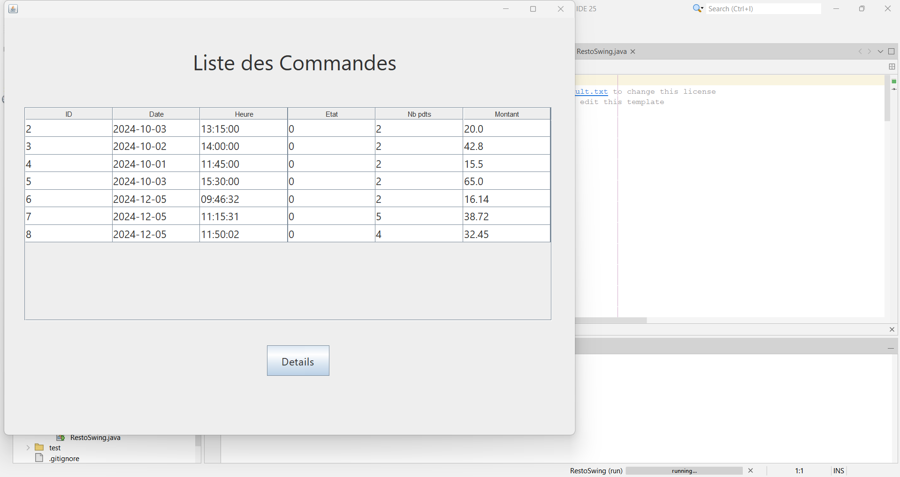

Découvrez mes stages réalisés durant mon BTS SIO.
Entreprise : Thermo Cold Solutions
Ce stage m’a permis d’approfondir mes compétences en développement front-end. J’ai travaillé en étroite collaboration avec le dirigeant pour proposer une interface claire, responsive et professionnelle. J’ai également renforcé mes connaissances en ergonomie et en expérience utilisateur (UX/UI).
Entreprise : LAKN Service
Ce premier stage m’a initié aux frameworks modernes comme Angular. J’ai appris à gérer une interface dynamique, à organiser un projet complexe en plusieurs composants et à suivre les bonnes pratiques du développement front-end. Le travail d’équipe m’a aidé à progresser rapidement.
Projet individuel
 



Projet en binôme
Projet en groupe (4 personnes)
 
